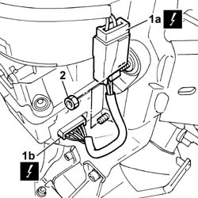
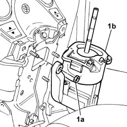
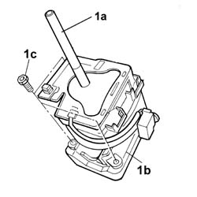

2127A12 hand lever of manual gearbox with hydraulic selection - r r
- Path
- Procedures > 21 GEARBOX UNIT > 2127 ELECTRO-HYDRAULIC SELECTION. GEARBOX EXTERNAL. CONTROLS > 2127A hydraulic transmission external linkage > 2127A12 hand lever of manual gearbox with hydraulic selection - r r
- Kind
- repair procedure (removal / refitting; the operation number is the code)
- Applies to
- engines: 1.2 8v; all production periods
- Interactive page
- https://sloeber94.github.io/elrnDB-fPnd/en/#/2752672
Applies to: engines: 1.2 8v; all production periods
 Removing
Removing
 Refitting
RefittingDisconnect the battery negative terminal.
2127A20 cover of control lever/handle for manual gearbox with hydraulic selection - r r
2127A16 panel of control lever for manual gearbox with hydraulic selection - r r
7040A28 TRIM on gearbox control panel - R.R.
1. Disconnect electrical connections (1a) and (1b).
 | Name | Connector |
|---|---|---|
1a | Gear controls | H37 |
| Name | Connector |
|---|---|---|
1b | Robotized gearbox AUTO function switch | H34 |
2. Undo the nuts fixing the complete lever.

Applies to: engines: 1.2 8v; all production periods
1. Undo the remaining fixing nut (1a) and remove the complete lever (1b).

Applies to: engines: 1.2 8v; all production periods
1. If necessary, dismantle the lever (1a) from the mounting (1b), undoing the fixing bolts (1c).

Applies to: engines: 1.2 8v; all production periods
Refitting
RemovingWorking at the bench, fit the lever and mounting and tighten the fixing bolts.
Fit the complete lever in its seating and secure it with the fixing nuts.
Connect the electrical connections.
| Name | Connector |
|---|---|---|
- | Gear controls | H37 |
| Name | Connector |
|---|---|---|
- | Robotized gearbox AUTO function switch | H34 |
7040A28 TRIM on gearbox control panel - R.R.
2127A16 panel of control lever for manual gearbox with hydraulic selection - r r
2127A20 cover of control lever/handle for manual gearbox with hydraulic selection - r r
Connect the battery negative terminal.